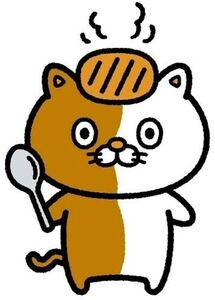

Trade Mark Journal No.2025/045 7 November 2025
WO0000001882759 (43)
Office of origin: Japan

The mark contains the colours black, brown, light brown, silver, and white.
The mark consists of a stylized brown and white cat with a light brown cutlet on its head and a silver spoon in its right hand. The color black appears on the outlines of the cat, the cat's body parts, the spoon, and the cutlet. The color black also appears on the cat's pupils and whiskers, the curved line on the spoon head, the four oblique lines in the cutlet, and the four steam graphics above the cutlet. The color brown appears on the left half of the cat's body. The color light brown appears on the cutlet, the cat's inner ears, and the cat's nose. The color silver appears on the spoon. The color white appears on the right half of the cat's body, on the cat's eyes except for the pupils, and on the cat's muzzle.
- Class 43
- Restaurant services specializing in serving curry-type cuisine; restaurant services; cafeteria services; canteen services; cafe services; snack-bar services; food and drink catering; self-service restaurant services; providing food and beverages.
ICHIBANYA CO., LTD.
Representative: ONDA Makoto, 12-1, Omiya-cho 2-chome,, Gifu-shi, Gifu-ken 500-8731, JAPAN